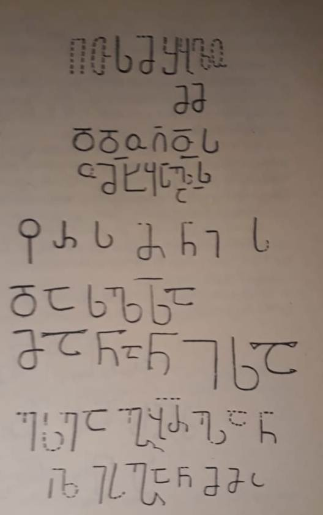

უდეს ფარსმანისა და მანანის წარწერა
შინაარსი / Summary
მოსახსენებელი
ბიბლიოგრაფია Bibliography
კრიტიკული გამოცემა Interpretive Edition
წ(მიდა)ო სმშ(ი)ბ(ო)(ე)
მ(არია)მ
დ(ე)დ(ა)ო ღ(მრ)თ(ი)ს(ა)ო მ(ეო)ხ(ე)ყავ ს(უ)ლსა
ფ(ა)რსმ(ა)ნის(ა)
და ს(უ)ლსა
მანანისა
ესე ა(რს) გ(ა)ბრ(იე)ლან -
10გ(ე)ლ(ოზ)ი რ(ომელ)ი ეტყ(ჳ) გ(ი)ხ(აროდე)ნ მ(ი)მ(ა)დ(ლებულო)
დიპლომატიური გამოცემა Diplomatic Edition
ႼႭ ႱႫႸႡ
ႫႫ
ႣႣႭ ႶႧႱႭ ႫႾႷႠႥ ႱႪႱႠ
ႴႰႱႫႬႨႱ
ႣႠ ႱႪႱႠ
ႫႠႬႠႬႨႱႠ
ႤႱႤ Ⴀ ႢႡႰႪႠႬ
10ႢႪႨ ႰႨ ႤႲႷ ႢႾႬ ႫႫႣ

უდეს ფარსმანისა და მანანის წარწერა
{'ka': 'წმიდაო ღვთისმშობელო მარიამ, დედაო ღმრთისაო, შეეწიე ფარსმანისა და მანანის სულებს. ეს არის გაბრიელ ანგელოზი, რომელიც ეტყვის: „გიხაროდენ, მიმადლებულო“.'}
{'default': 'წარწერას განკვეთილობის ნიშნები არ ახლავს, სიტყვები ერთმანეთისაგან არ არის დაცილებული. ქარაგმის ნიშნად გამოყენებულია საშუალო ზომის სწორი განივი ხაზი.\n გურამ აბრამიშვილი წარწერას IX საუკუნით ათარიღებს. ნოდარ შოშიაშვილი X საუკუნის ძეგლად მიიჩნევს შემდეგი პალეოგრაფიული ნიშნების საფუძველზე:\n Ⴂ, Ⴄ, Ⴊ გრაფემებს მარცხნივ გაზიდული დამატებითი განივი ხაზი აქვთ, ზოგჯერ გრაფემებსა და ქარაგმის ნიშნებს ახასიათებს ოდნავ შესამჩნევი კიდურწაისრულობა, გრაფემების\n მიდრეკილება ოთხხაზოვნებისაკენ, Ⴔ-ს წრეს ბუნი არ კვეთს.\n ვალერი სილოგავას აზრით, წარწერის ტექსტი მეტად ორიგინალურია. იგი მთავრდება გაბრიელ მთავარანგელოზის მიმართვის სიტყვებით ღვთისმშობლის\n ხარების სახარებისეული სცენიდან (ლ.1.28). მკვლევარს მიაჩნია, რომ წარწერაში მოხსენიებული ქტიტორები - ფარსმანი და მანანი - ცოლ-ქმარი უნდა იყვნენ.\n ვინაიდან ის ადგილი, სადაც ეს ქვა ჯვარი იპოვეს, ჩორჩანელთა ფეოდალური სახლის ძველი სამფლობელოა, ვალერი სილოგავას აზრით, ქტიტორი ფარსმან ჩორჩანელია. ფარსმანი\n ძველ ჩორჩანელთა ერთ-ერთი საგვარეულო სახელია, რომელიც შემდეგში ამ გვარის მემკვიდრე ბაჰლაუნთა სახლშიც გადავიდა. მისი აზრით, ქვაჯვრის წარწერის ფარსმანი X საუკუნის\n მიწურულის მოღვაწე ფარსმან ერისთავი უნდა იყოს და ამიტომ წარწერას და ქვაჯვარს X-XI სს. მიჯნით ათარიღებს.'}
<div type="edition" xml:lang="ka" ana="mtavruli" xml:space="preserve">
<ab>
<lb n="1"/><w lemma="ქრისტე"><expan><abbr>ქ</abbr><ex>რისტ</ex><abbr>ე</abbr></expan></w>
<w lemma="განსუენება"><expan><abbr>გა</abbr><ex>ნ</ex><abbr>ო</abbr><ex>ჳ</ex><abbr>ს</abbr><ex>უ</ex><abbr>ენე</abbr></expan></w>
<w lemma="სულ">სოჳ<lb n="2" break="no"/>ლსა</w>
<name nymRef="ვაჩა">ვაჩაჲს<lb n="3" break="no"/>ასა</name>
<name nymRef="გურა"><expan><abbr>გო</abbr><ex>ჳ</ex><abbr>რაჲ<lb n="4" break="no"/>სასა</abbr></expan></name>
<name nymRef="მირა"><expan><abbr>მ</abbr><ex>ი</ex><abbr>რა</abbr><ex>ჲ</ex><abbr>ს</abbr><ex>ა</ex><abbr>ს</abbr><ex>ა</ex></expan></name>
</ab>
</div>